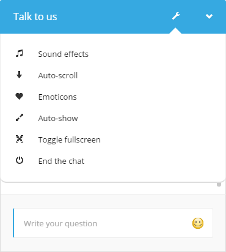

Texto original
Sugira uma tradução melhor
Para que o aplicativo funcione corretamente instale em servidor linux com cPanel, versão PHP 5.4+, banco de dados MySQL. Browsers começando com IE8 e mais novos são suportados.
Depois de baixar todos os arquivos, copiar e fazer o upload do chat diretório em qualquer lugar no seu servidor web (por exemplo, para o diretório raiz do seu site). Livechat pasta contém todos os arquivos necessários (configuração, scripts, dados e recursos).
Se você estiver usando um sistema de CMS ou software shoping (como WordPress, Joomla, etc.) copiar esta pasta para o diretório raiz do seu CMS.
Os seguintes arquivos / diretórios deve ser tanto legível e gravável pelo PHP:
data / pasta,/ upload pasta + suas subpastas,/php/config/app.settings.php arquivo,/php/config/parameters.php arquivo.Visite o seguinte URL:
<Your_web_server_url> / <livechat_dir> /php/app.php
Quando a aplicação for acessada pela primeira vez, você será redirecionado para o assistente de instalação:
Após a instrução, clique Vamos! . A página a seguir será exibida ao lado:
Preencha o formulário com as suas configurações e clique em Salvar . A próxima página será:
Aqui, verifique seus dados apresentados e confirme usando a Instalar botão. Se tudo correr bem, a última página será exibida:
Agora você está pronto para incorporar o Widget do bate-papo em seu site. Para fazer isso você tem que adicionar uma linha especial de código em seu principal documento HTML / layout. Para obter este trecho de código voltar ao painel de administração ( <your_web_server_url> / <livechat_dir> /php/app.php?login ) e selecione Obter roteiro Widget no menu superior direito. Isto irá mostrar uma janela com o código para copiar mensagem:
Cole-o na cabeça secção do seu site ou no final do corpo tag e isso é tudo. Este script irá carregar todas as dependências e adicione o widget de chat no canto inferior direito do seu site. Agora, quando você visitar o site, ele deve mostrar o widget com formulário de contato exibido nele (como há operadores estão disponíveis on-line até o momento).
Você pode desinstalar o aplicativo do servidor utilizando a página de desinstalação. Basta selecionar Desinstalar a partir do menu superior direito. A página a seguir será exibida:
Depois de clicar no Desinstalar botão, o aplicativo será desinstalado e você verá a seguinte mensagem:
Para instalar o bate-papo em um site WordPress siga os mesmos passos descritos acima para a instalação de costume. Apenas lembre-se, no último passo que o widget de bate-papo deve ser embutido no arquivo de layout principal (por isso é disponível em qualquer seção do site). Para fazer esta tarefa simples para você, você pode usar a página por adicionar a cabeça WordPress plugin ( http://wordpress.org/plugins/per-page-add-to/ ), que permite inserir conteúdo adicional à cabeça seção de seu site. Depois de instalar o plugin e ligá-lo, vá até Configurações / Adicionar <head> para todas as páginas em você WP painel de administração, cole o widget incorporação trecho (olhar para a seção anterior para ver onde obtê-lo a partir) na área de texto e clique em Salvar . Da próxima vez que você visitar qualquer página de seu site WordPress, o widget deve ser visível no canto inferior direito.
Para instalar o bate-papo em um site Joomla siga os mesmos passos descritos acima para a instalação de costume. Apenas lembre-se, no último passo que o widget de bate-papo deve ser embutido no arquivo de layout principal (por isso é disponível em qualquer seção do site). Para fazer esta tarefa simples para você, você pode usar o EasyScript plugin do Joomla que lhe permite inserir conteúdo adicional para a cabeça secção do seu site. Depois de instalar o plugin e ligá-lo, ir para Extensions / Plugin Gerente , selecione EasyScript plug-in da lista in, exibir o Outro guia em suas configurações e colar o widget incorporação trecho (olhar para a seção anterior para ver onde obtê-lo a partir de ) na itens adicionais área de texto. Finalmente clique no Salvar botão. Da próxima vez que você visitar qualquer página de seu site Joomla, o widget deve ser visível no canto inferior direito.
Para instalar o bate-papo em um site Drupal siga os mesmos passos descritos acima para a instalação de costume. Apenas lembre-se, no último passo que o widget de bate-papo deve ser embutido no arquivo de layout principal (por isso é disponível em qualquer seção do site). Para fazer esta tarefa simples para você, você pode usar o Add to Head módulo Drupal ( https://drupal.org/project/add_to_head ), que permite inserir conteúdo adicional na cabeça secção do seu site. Depois de instalar o módulo e ligá-lo, ir para Módulos , encontre Adicionar ao módulo da cabeça na lista e clique em Configurar ao lado dele. Na janela que exibe escolha
Adicionar outro perfil . O formulário será exibido. Nomear a entrada no entanto você gostaria de e colar o widget incorporação trecho (olhar para a seção anterior para ver onde obtê-lo a partir) no Código de área de texto. Você também pode preencher o caminho incluído / excluído usando o Caminhos
área de texto e definir o script para ser colocado na secção da cabeça ou scripts usando o Âmbito da adição de botões de rádio (seção Scripts provavelmente vai ser a melhor opção). Finalmente clique no Salvar botão. Da próxima vez que você visitar qualquer página de seu site Drupal, o widget deve ser visível no canto inferior direito.
Para instalar o bate-papo em um site Drupal siga os mesmos passos descritos acima para a instalação de costume. Apenas lembre-se, no último passo que o widget de bate-papo deve ser incorporado no layout principal (por isso é disponível em qualquer seção do site). Para fazer esta tarefa simples para você, você pode usar o Add to Head módulo OpenCart ( http://www.opencart.com/index.php?route=extension/extension/info&extension_id=11171 ), que permite inserir conteúdo adicional à cabeça secção do seu site. Depois de instalar o módulo e ligá-lo, ir para Extensions / Módulos , encontre Adicionar ao módulo da cabeça na lista e clique em Editar ao lado dele. Na página que exibe clique
em Adicionar módulo para criar uma entrada de arquivo. O formulário será exibido. Selecione o Javascript (js) no tipo de arquivo de entrada e e pasta de arquivo parte do caminho
do widget incorporação trecho (olhar para a seção anterior para ver onde obtê-lo a partir de) para o Caminho do arquivo de entrada de texto. A parte caminho do arquivo significa que você só deve usar a incorporação trecho src valor do atributo aqui (e não o todo Widget snippet).
Por exemplo, se o fragmento se parece com isso:
<Script type = "text / javascript" src = "http:? //example.domain/livechat/php/app.php Widget-Init.js"> </ script>
Você só deve copiar o http: //example.domain/livechat/php/app.php widget-Init.js? Texto e usá-lo no Adicionar ao Chefe de configuração.
Depois de adicionar a primeira entrada no módulo, repita o processo de adicionar entradas adicionais para o maior número de seções do site que você gostaria que o widget apareça diante. Primeiro adicione a entrada como descrito anteriormente e depois selecionar outro tipo de página do layout
de entrada. Adicione quantas entradas como há tipos de layout disponíveis (para o widget está presente em todos os lugares).
Finalmente clique no Salvar botão. Da próxima vez que visitar páginas mencionadas do seu site OpenCart, o widget deve ser visível no canto inferior direito.
Existem 3 tipos de usuários na aplicação: admin, operadores e convidados. Admin é o usuário que pode executar a instalação (un), alterar as configurações globais, gerenciar operadores e navegar conversando história, mas não é permitido para conversar. Os operadores podem conversar com visitantes e uma vez que, pelo menos, um único operador efetua login, widget de chat não irá exibir o formulário de contato não mais - formulário de login convidado será exibida. Os operadores também estão autorizados a mudar os seus dados de perfil e procurar o histórico de conversas. Os clientes são os visitantes do seu site que fazer login através do widget de bate-papo e conversar com os operadores.
Para acessar o bate-papo sempre usar o <your_web_server_url> / <livechat_dir> /php/app.php?login caminho tanto para conta de administrador e as contas das operadoras. Para uso conta admin administrador (ou outra, se você mudou o nome padrão no assistente de instalação) como o login e para os operadores usam seus endereços de e-mail como o login.
Para sair da sessão do bate-papo abrir o menu superior direito e clique no Sair item.
Para alterar log configurações do aplicativo usando a conta de administrador e vá para a seção de configurações usando o ícone de chave inglesa no lado esquerdo. Um formulário com múltiplas opções de configuração será exibido, onde você pode atualizar opções, tais como: cores, contato de e-mail, mensagens e etiquetas traduções, esconder quando o recurso off-line, novo som mensagem e conexões máximo permitido. Enquanto a maioria das configurações são auto-explicativas, os dois seguintes exigir um pouco de esclarecimento:
Esconder em modo offline - verificando esta opção fará com que o widget de chat para não ser mostrado em caso nenhum operador está disponível on-line.Mostrar Widget automaticamente - define se o widget deve ser aberto automaticamente após determinado tempo (sem o visitante clicar nele).Mostrar Widget automaticamente depois (segundos) - especifica o número de segundos após o qual widget deve ser aberto automaticamente.Versão móvel breakpoint - Este é contendo largura da página do widget em pixels abaixo do qual a versão móvel do widget é usado. Em outras palavras - se contendo página é menor do que esse valor, widget padrão será oculto e sua versão móvel será usado.Máximo de conexões - essa opção especifica o número de bate-papos máximos de hóspedes abertos simultaneamente. Por exemplo, se o valor é de 10 a 10 visitantes será capaz de conversar com os operadores, ao mesmo tempo. Esse recurso pode ajudar a reduzir o consumo de energia do seu servidor ou ajustar o número máximo de chats com base em quantas conversas simultâneas você pode manipular. Os hóspedes que visitam sua página enquanto o limite for atendida será apresentado com a vista formulário de contato em vez da janela de conversação. Depois convidados atualmente conversando deixar o bate-papo, os novos visitantes será capaz de se conectar.
Esta secção só está disponível se conectado como o usuário admin.
Aqui, você pode mudar o tema visual do widget conversando. Ele será atualizado imediatamente.
Operadores e administrador pode visualizar o widget a conversar a qualquer momento, clicando no pré-visualização Widget item no menu superior direito (ou ícone de olho no menu à esquerda). Isso resultará em abrir a página a seguir em uma nova aba do navegador. Lá, você pode testar aparência e comportamento do widget:
Ao lado da guia de configurações é a guia operadores, que é usado para gerenciar todos os operadores. Você pode adicionar, remover ou modificar os usuários aqui. Se você estiver conectado como um operador, você pode mudar a sua própria informações de perfil. Além disso, as senhas podem ser repostas aqui e avatares perfil selecionado / carregado.
Antes você está autorizado a conversar com os visitantes, você tem que criar pelo menos uma conta de operador e log em usá-lo.
Para criar um movimento operador Operadores guia e clique Adicionar novo botão na parte superior. O seguinte formulário será mostrado:
Preencha o formulário com os dados de operadores e clique em Salvar . O endereço de e-mail especificado aqui será usado para efetuar login com a conta do operador. Importante: a senha de campo tem de ser preenchido com pelo menos 6 caracteres.
Antes você está autorizado a conversar com os visitantes, você tem que criar pelo menos uma conta de operador e log em usá-lo. Para mais informações, vá para Operadores seção.
Para os seus visitantes para ser capaz de bate-papo você tem que estar conectado como um operador. Caso contrário, os convidados só vai ver um retorno formulário de contato e não o formulário de login chat.
A seção padrão que é exibido após o login como um operador é a visão de chat. Todos os usuários on-line são listados à esquerda aqui ( usuários online e operadores online listas). Se você mover o cursor do mouse sobre o nome de um usuário, você verá uma pequena janela com informações sobre o usuário. Você pode esperar por incomming mensagens ou clique no nome do usuário e iniciar uma conversa se. Quando novas mensagens chegam operadores são notificados com som, bem como piscar ícones de envelope ao lado dos cabeçalhos de guia. Depois de abrir guia do usuário, você pode digitar suas mensagens para a entrada na parte inferior ( Escreva a sua mensagem ) e pressione enter para enviá-los. Você também pode usar emoticons, clicando em seu símbolo à direita da entrada.
Apenas um operador está autorizado a falar com um convidado, ao mesmo tempo. No caso de um segundo operador tenta enviar mensagens para o convidado dado, a mensagem do sistema será exibida, informando o operador que o hóspede já é tratado por outra pessoa.
Ao falar com um convidado, em cima de vista do bate-papo há um status ao vivo do convidado página é atualmente visitando.
Conversas entre dois operadores também são possíveis - apenas clicar no nome do operador na lista de operadores on-line.
conversando Guest funciona exatamente da mesma maneira. Além disso, durante a conversa, os hóspedes podem acessar um menu de configurações usando o ícone de chave inglesa na barra de título para atualizar as configurações, como o uso de emoticons, uso de notificação sonora, auto rolagem da caixa de chat e auto exibição do chat.
Se um convidado atualiza a página web, que detém o widget de bate-papo, ele ainda é permitido falar usando a mesma sessão e todas as mensagens anteriores são exibidas no chat.
O aplicativo permite que você crie uma lista de mensagens que podem ser rapidamente colados em conversa com um visitante. Você pode gerenciá-los dentro das mensagens predefinidas (somente quando conectado como o usuário administrador).
Importante: Você pode usar espaços reservados dinâmicos dentro do corpo da mensagem enlatada. Os seguintes espaços reservados estão disponíveis:
{name} - quando o operador utiliza a mensagem será substituir por seu nome real{mail} - quando o operador utiliza a mensagem será substituir pelo seu endereço de e-mail real
Para usar as mensagens predefinidas, clique no Canned botão (à esquerda do campo de entrada de mensagem) quando se fala de um convidado. A seguinte janela pop-up será exibida:
Primeiro, selecione uma das mensagens clicando em seu texto. Em seguida, pressione Insert e a mensagem será colocada dentro de sua entrada mensagem.
seção Histórico permite tanto administração e os operadores a navegar e pesquisar através de todo o histórico de conversas. Deixando todas as entradas de filtragem vazios irá resultar em todas as negociações serem listados. Para mostrar uma determinada conversa depois que ele é encontrado, clique no item na lista de resultados sob a forma de pesquisa e a conversa será exibida no lado direito. Na opinião da conversa você também pode ver os seus participantes informações de perfil e data da conversa de início / término e tempo.
Importante: Se você observar a aplicação abrandar, você pode tentar limpar o histórico de mensagens, clicando em Limpar histórico .
Além de upload de avatares personalizados, um conjunto predefinido de imagens Avatar está disponível que tanto convidado e os operadores podem facilmente usar. Se você gostaria de modificar as imagens disponíveis como avatares pré-definidos, você só precisa modificar o conteúdo do
carregamento / default-avatares diretório. A aplicação repete automaticamente através de todos os avatares desta pasta e os torna disponíveis no chat.
Notificação nova mensagem sons reproduzidos quando novas mensagens chegarem pode ser encontrado em áudio diretório. Se você gostaria de usar sons adicionais para esse fim, basta copiar os arquivos MP3 para este diretório. O aplicativo irá carregar automaticamente todos os novos arquivos e permitir-lhe escolher um deles usando som Nova mensagem menu drop-down no painel do administrador Definições guia.
O Widget expõe uma API JavaScript para a página que contém. Desta forma, você pode interagir com o widget usando seu próprio código JavaScript. A API pode ser acessado através do phpLiveChat objeto global.
Importante: o código JavaScript personalizado tem de ser colocado depois do script incorporação widget - caso contrário, phpLiveChat objeto global não será acessível.
Aqui está um exemplo de código que apresenta todos os recursos disponíveis:
// Mostra o widget
phpLiveChat.show ();
// Ligue o modo de tela cheia
phpLiveChat.fullscreenOn ();
// Desligue o modo de tela cheia
phpLiveChat.fullscreenOff ();
// Ocultar o Widget
phpLiveChat.hide ();
// Fim do bate-papo
phpLiveChat.endChat ();
// Enviar uma mensagem ao operador
phpLiveChat.sendMessage ( 'Olá :)!');
// Executar código personalizado quando os operadores estão online
phpLiveChat.onoperatorsonline = function ()
{
alert ( 'Os operadores estão online');
};
// Executar código personalizado quando os operadores estão offline
phpLiveChat.onoperatorsoffline = function ()
{
alert ( 'Os operadores estão offline');
};
// Executar código personalizado quando uma nova mensagem é recebida
phpLiveChat.onmessage = function ()
{
alert ( 'Nova mensagem acabado de chegar');
};
// Executar código personalizado quando um logs de visitante para o bate-papo
phpLiveChat.onloginsuccess = function ()
{
alert ( 'Visitor começou o bate-papo');
};
// Executar código personalizado quando um visitante termina o bate-papo
phpLiveChat.onlogoutsuccess = function ()
{
alert ( 'Visitor terminou o bate-papo');
};
// Executar código personalizado quando o operador está digitando
phpLiveChat.onoperatortyping = function ()
{
alert ( 'Operador está digitando agora');
};